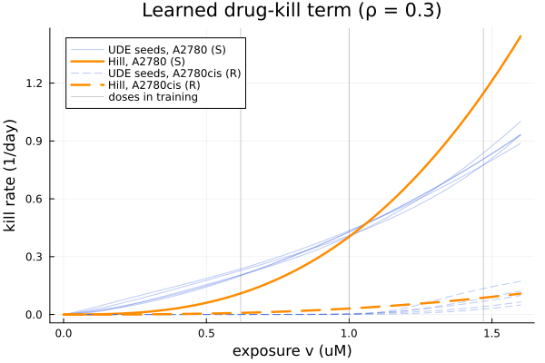
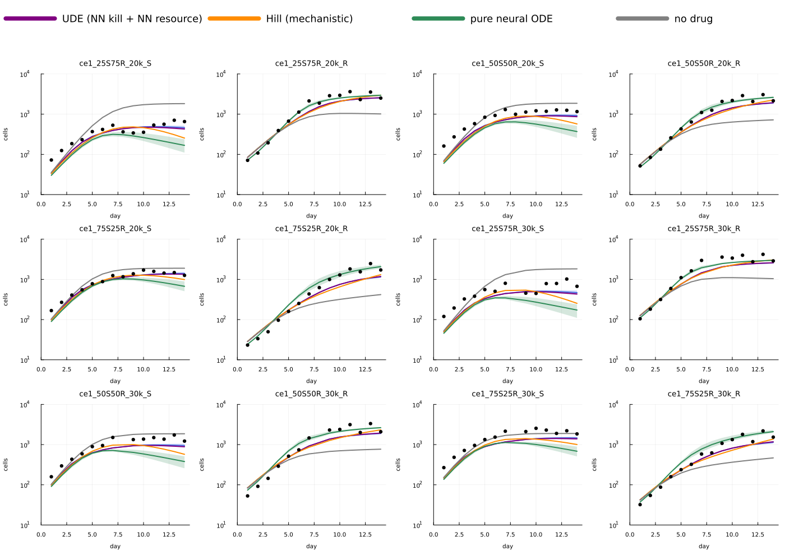
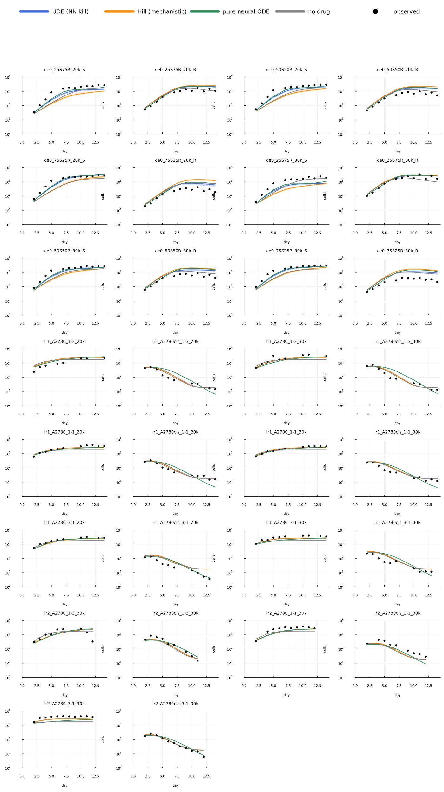

dS/dt = rSS(1 − (S + aSRR)/KS) − dS(Q)S − killS(v, ρ)S, same for R; dv/dt = γ(u − v) (drug exposure driven by the dose u); dQ/dt = −cQ(S + R)/3500 (resource left, low-resource wells only); dL(Q) = δL(1 − Q). Every model is autonomous — no clock-time term or input anywhere; delays come from v and Q. UDE: kill = v·softplus(NN(v, ρ, line)), a 3-8-8-1 tanh net, so no drug ⇒ no kill. Comparators: Hill kill (mechanistic), no drug, and a pure neural ODE (per-capita growth = NN(ρ, v, line, low, Q)), which has no competition term and is therefore fitted to the drug and untreated co-culture units together. The UDE and Hill fit the competition a afterwards on untreated co-culture only.
Starting values: every well starts at t = 0 from its nominal seeding (100 cells per 30k well, 66.7 per 20k well, times the line's share); day 0 is not a measurement. A training series whose first count is more than 3d-fold off nominal has its starting value estimated (9 of the training drug series). Held-out wells always start from the nominal seeding.
Seeds: each neural model is fitted from 5 random initialisations (seeds 1–5); Hill and no-drug are deterministic single fits (an 8-member Bayesian bootstrap of Hill gives parameter intervals). Runtime of this run: 3.1 min (fits loaded from checkpoints are not timed; the full set of fits took about 2.5 h on 6 threads alongside the mechanistic refit, 2026-10-07).
Every trajectory is predicted forward from t = 0 with no refitting. The validation rows are data never used in fitting.
| model | train: drug units | train: untreated co-culture | VALIDATION: ce1 treated co-culture |
|---|---|---|---|
| UDE (NN kill) | 0.292 ± 0.001 | 0.564 ± 0.001 | 0.39 ± 0.003 |
| UDE (NN kill + NN resource) | 0.291 ± 0.001 | 0.562 ± 0.003 | 0.394 ± 0.004 |
| pure neural ODE | 0.264 ± 0.02 | 0.412 ± 0.019 | 0.568 ± 0.107 |
| no drug | 0.607 | 0.598 | 0.764 |
| Hill (mechanistic) | 0.304 | 0.564 | 0.451 |
Seed-ensemble mean prediction:
| model | train: drug units | train: untreated co-culture | VALIDATION: ce1 treated co-culture |
|---|---|---|---|
| UDE (NN kill) | 0.292 | 0.564 | 0.3886 |
| UDE (NN kill + NN resource) | 0.291 | 0.5616 | 0.3935 |
| pure neural ODE | 0.2506 | 0.3983 | 0.5615 |
| no drug | 0.6074 | 0.5982 | 0.7642 |
| Hill (mechanistic) | 0.3036 | 0.5635 | 0.4512 |
| model | train: drug units | train: untreated co-culture | VALIDATION: ce1 treated co-culture |
|---|---|---|---|
| UDE (NN kill) | 0.2142 | 0.3763 | 0.2258 |
| UDE (NN kill + NN resource) | 0.2136 | 0.3834 | 0.2272 |
| pure neural ODE | 0.1802 | 0.2965 | 0.2245 |
| no drug | 0.329 | 0.3956 | 0.262 |
| Hill (mechanistic) | 0.2177 | 0.3798 | 0.2501 |
Refits without held-out trajectories (unseen schedules, an unseen dose, an unseen seeding density) are on the hold-out folds page (run_03b_folds.jl).
The pure neural ODE was also fitted to the untreated co-culture, so its drug-unit BIC is not strictly comparable.
| model | kill_params | weighted_sse | bic | bic_mean_over_seeds | bic_sd_over_seeds | seeds |
|---|---|---|---|---|---|---|
| no drug | 0 | 4355 | 4485 | 4485 | 0 | 1 |
| Hill (mechanistic) | 5 | 829.5 | 989.9 | 989.9 | 0 | 1 |
| UDE (NN kill) | 113 | 734.6 | 1536 | 1544 | 6.546 | 5 |
| UDE (NN kill + NN resource) | 226 | 729.7 | 2203 | 2214 | 6.488 | 5 |
| pure neural ODE | 129 | 626.6 | 1524 | 1593 | 63.59 | 5 |
r20_over_r30 is the growth-rate multiplier for 20k-seeded wells: an interval including 1 means density acts only through the starting cell number.
| model | over | parameter | median | lo_5 | hi_95 |
|---|---|---|---|---|---|
| Hill (mechanistic) | bootstrap | r_S | 0.6968 | 0.6882 | 0.7203 |
| Hill (mechanistic) | bootstrap | K_S | 3491 | 3225 | 3569 |
| Hill (mechanistic) | bootstrap | r_R | 0.539 | 0.528 | 0.5525 |
| Hill (mechanistic) | bootstrap | K_R | 3898 | 3810 | 4063 |
| Hill (mechanistic) | bootstrap | r_S_low | 0.4929 | 0.4662 | 0.5255 |
| Hill (mechanistic) | bootstrap | δ_S_low | 0.1502 | 0.1173 | 0.3004 |
| Hill (mechanistic) | bootstrap | r_R_low | 0.7215 | 0.6771 | 0.7818 |
| Hill (mechanistic) | bootstrap | δ_R_low | 9.779 | 4.976 | 21.84 |
| Hill (mechanistic) | bootstrap | c | 0.2586 | 0.1122 | 0.5438 |
| Hill (mechanistic) | bootstrap | γ | 0.3132 | 0.2951 | 0.3441 |
| Hill (mechanistic) | bootstrap | floor | 0.7584 | 0.6137 | 0.9354 |
| Hill (mechanistic) | bootstrap | floor_low | 38 | 33.14 | 47.43 |
| Hill (mechanistic) | bootstrap | r20_over_r30 | 0.9869 | 0.9801 | 1.014 |
| UDE (NN kill) | seeds | r_S | 0.7056 | 0.6911 | 0.7154 |
| UDE (NN kill) | seeds | K_S | 3751 | 3619 | 3949 |
| UDE (NN kill) | seeds | r_R | 0.525 | 0.5219 | 0.5262 |
| UDE (NN kill) | seeds | K_R | 4366 | 4327 | 4439 |
| UDE (NN kill) | seeds | r_S_low | 0.4613 | 0.4543 | 0.4798 |
| UDE (NN kill) | seeds | δ_S_low | 0.1763 | 0.1676 | 0.1959 |
| UDE (NN kill) | seeds | r_R_low | 0.7066 | 0.7039 | 0.7294 |
| UDE (NN kill) | seeds | δ_R_low | 8.098 | 7.792 | 8.977 |
| UDE (NN kill) | seeds | c | 0.2955 | 0.2633 | 0.3024 |
| UDE (NN kill) | seeds | γ | 0.3348 | 0.3216 | 0.3538 |
| UDE (NN kill) | seeds | floor | 0.7125 | 0.7043 | 0.7206 |
| UDE (NN kill) | seeds | floor_low | 37.76 | 37.53 | 37.89 |
| UDE (NN kill) | seeds | r20_over_r30 | 1.002 | 0.9999 | 1.008 |
| UDE (NN kill + NN resource) | seeds | r_S | 0.7106 | 0.7057 | 0.7112 |
| UDE (NN kill + NN resource) | seeds | K_S | 3680 | 3627 | 3902 |
| UDE (NN kill + NN resource) | seeds | r_R | 0.5244 | 0.5242 | 0.5253 |
| UDE (NN kill + NN resource) | seeds | K_R | 4381 | 4363 | 4461 |
| UDE (NN kill + NN resource) | seeds | r_S_low | 0.4667 | 0.4477 | 0.472 |
| UDE (NN kill + NN resource) | seeds | δ_S_low | 0.1506 | 0.1506 | 0.1506 |
| UDE (NN kill + NN resource) | seeds | r_R_low | 0.7068 | 0.6909 | 0.715 |
| UDE (NN kill + NN resource) | seeds | δ_R_low | 10.54 | 10.54 | 10.54 |
| UDE (NN kill + NN resource) | seeds | c | 0.3165 | 0.2613 | 0.3277 |
| UDE (NN kill + NN resource) | seeds | γ | 0.3502 | 0.3362 | 0.3592 |
| UDE (NN kill + NN resource) | seeds | floor | 0.7164 | 0.708 | 0.719 |
| UDE (NN kill + NN resource) | seeds | floor_low | 37.26 | 37.09 | 37.76 |
| UDE (NN kill + NN resource) | seeds | r20_over_r30 | 1.002 | 0.9974 | 1.004 |


